GAMES101 — Modern Computer Graphics Note2: Rasterization and Shading
对应 Lecture 5–9，外加 Lecture 10 开头的 texture 应用和 Lecture 12 末尾的 shadow mapping， 因为它们在内容上都属于光栅化管线。
1. 从 canonical cube 到屏幕
1.1 用 fovY 和 aspect 定义视锥
上一篇的透视投影需要近平面的 \(l, r, b, t\)。实际上更常给垂直视场角 fovY 和 宽高比 aspect = width / height，并假设对称（\(l = -r\)，\(b = -t\)）：
1.2 Viewport transformation
MVP 之后所有东西都在 \([-1, 1]^3\) 里。屏幕是一个像素数组，大小叫 resolution。 "Raster" 在德语里就是屏幕，rasterize 就是画到屏幕上。Pixel 是 picture element 的 缩写，暂时把它当成一个颜色均匀的小方块，颜色由 (R, G, B) 混合而成。
屏幕空间的约定（和 tiger book 略有不同）：
- 像素索引 \((x, y)\) 都是整数，范围 \((0, 0)\) 到 \((width - 1, height - 1)\)
- 像素 \((x, y)\) 的中心在 \((x + 0.5, y + 0.5)\)
- 屏幕覆盖 \((0, 0)\) 到 \((width, height)\)
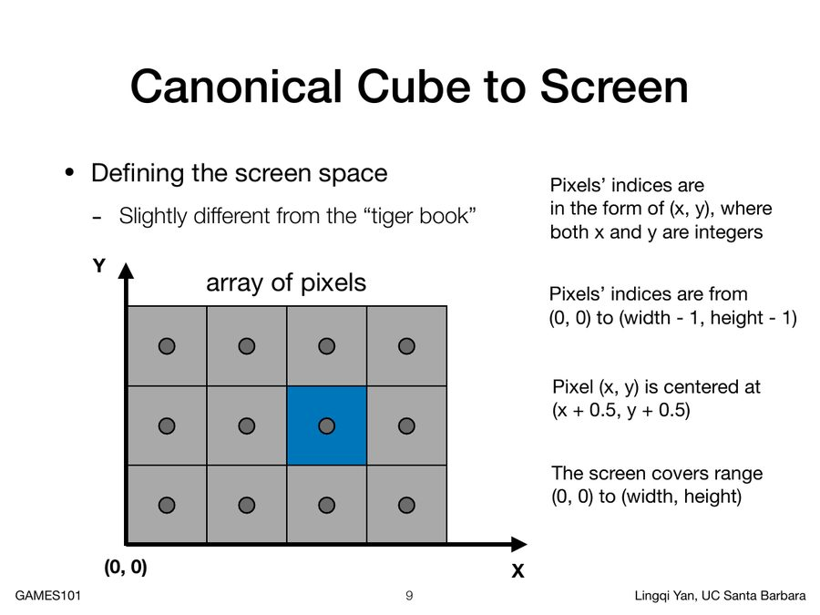
Viewport transform 与 z 无关，只把 xy 平面的 \([-1, 1]^2\) 变到 \([0, width] \times [0, height]\)：
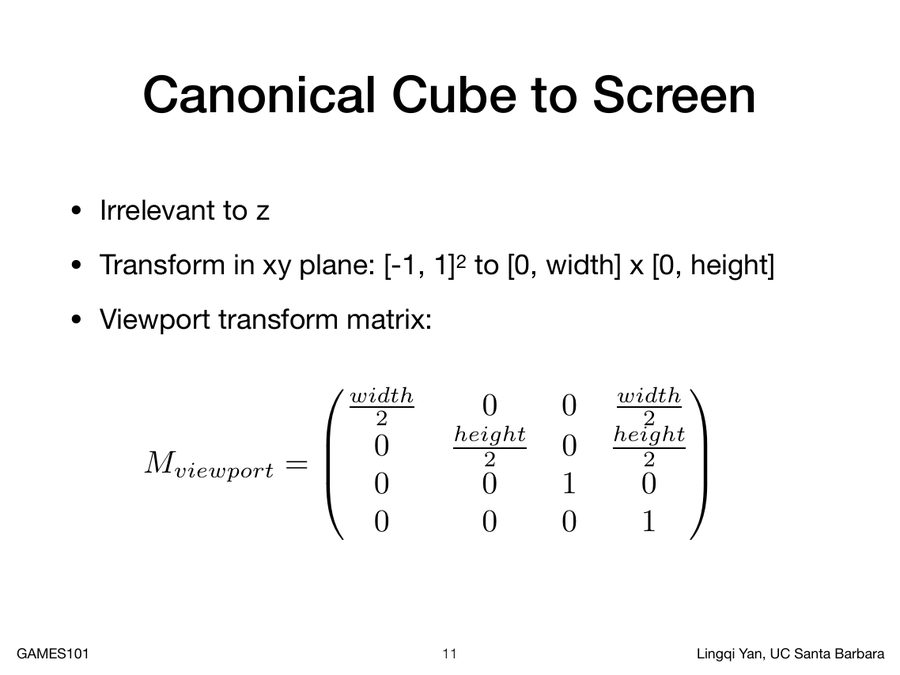
1.3 各种光栅显示设备
示波器、CRT（阴极射线管，用 raster scan 逐行扫描并调制强度）、frame buffer （存一帧图像的显存）、LCD（液晶通过扭转偏振来阻挡或透过背光）、LED 阵列、 电子墨水。真实 LCD 的每个像素其实是 R、G、B 三个子像素，本课假设一个像素就是一个 均匀发光的彩色方块。
2. 光栅化三角形
2.1 为什么是三角形
三角形是最基本的多边形，其他多边形都可以拆成三角形，而且它有独特的性质：
- 一定是平面的
- 内外定义明确
- 顶点上的值可以用重心坐标在三角形内插值
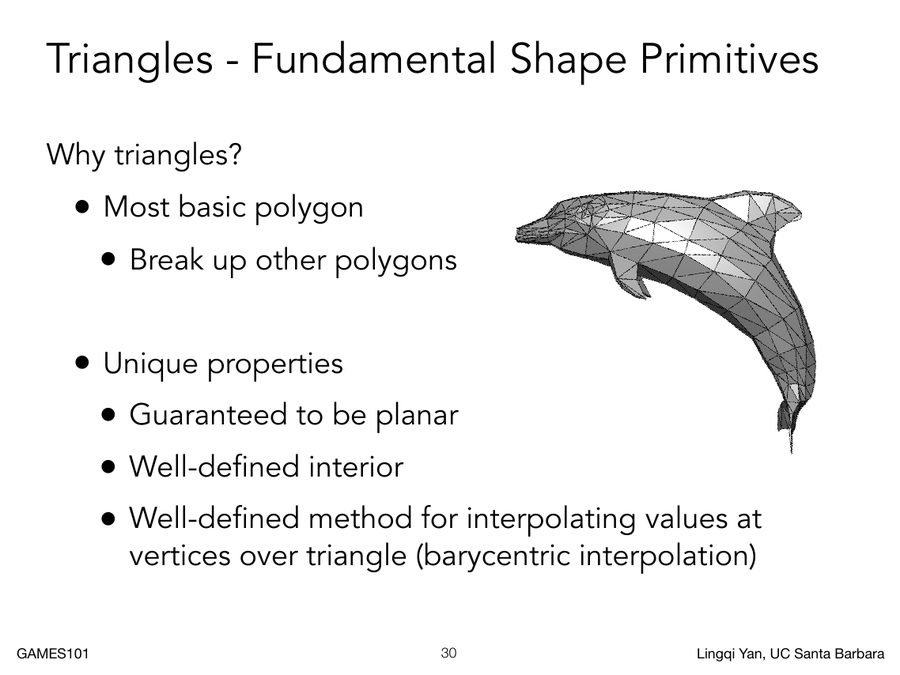
2.2 光栅化 = 采样
输入是投影到屏幕上的三角形顶点位置，输出是一组近似三角形的像素值。最简单的做法是 采样：在一个点上求函数值就是采样，采样可以把连续函数离散化。图形学里到处是采样： 时间（1D）、面积（2D）、方向（2D）、体积（3D）。
定义 indicator function \(inside(tri, x, y)\)，点在三角形内为 1，否则为 0。光栅化就是 在每个像素中心对它采样：
for (int x = 0; x < xmax; ++x)
for (int y = 0; y < ymax; ++y)
image[x][y] = inside(tri, x + 0.5, y + 0.5);
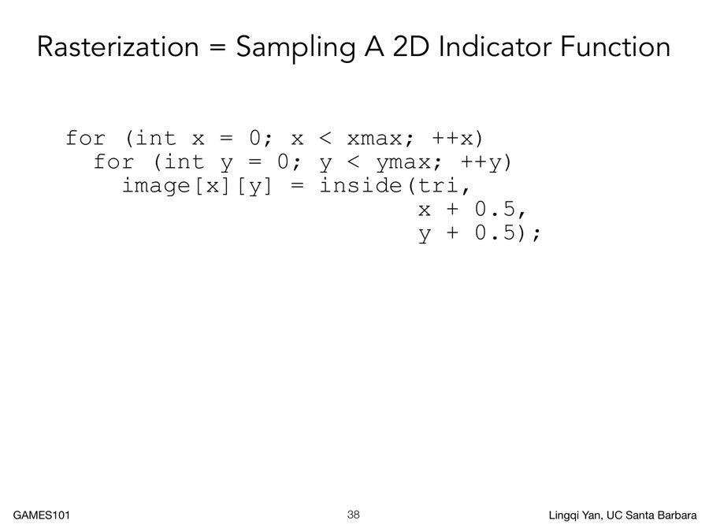
怎么判断 inside？三个叉积。 对三角形 \(P_0 P_1 P_2\) 和查询点 \(Q\)，分别算 \(\vec{P_0 P_1} \times \vec{P_0 Q}\)、\(\vec{P_1 P_2} \times \vec{P_1 Q}\)、\(\vec{P_2 P_0} \times \vec{P_2 Q}\)， 三个结果同号说明 \(Q\) 在三条边的同一侧，即在三角形内。
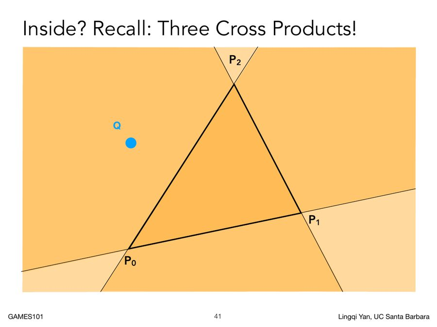
边界情况：采样点恰好落在两个三角形的公共边上，算谁的？自己定规则即可 （不处理或者按 top-left rule 之类的约定），本课不深究。
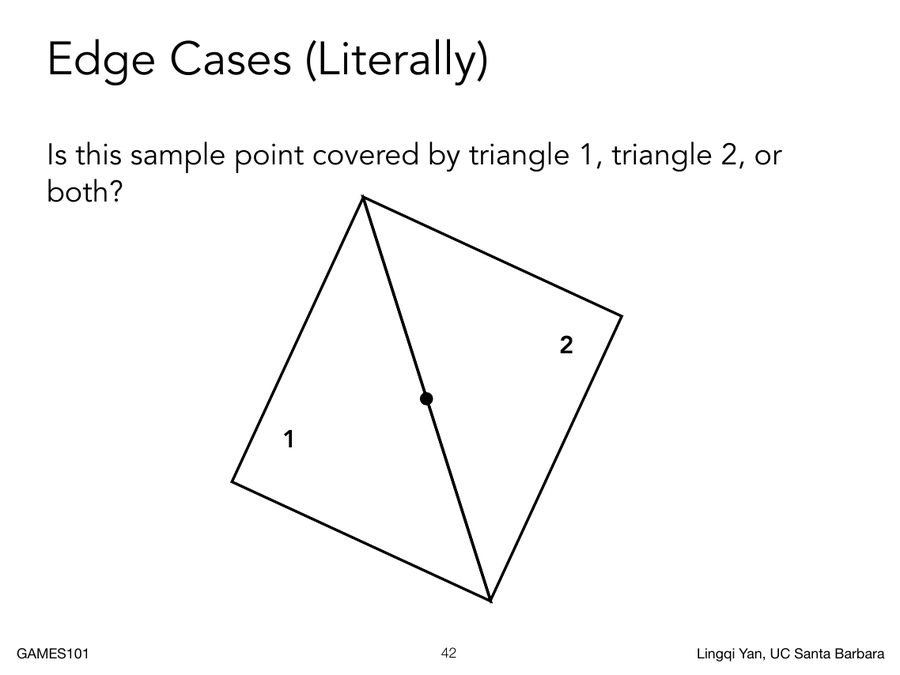
加速：不需要遍历整个屏幕，用三角形的 bounding box 限制范围。对细长又倾斜的 三角形，bounding box 浪费很多，可以用逐行增量遍历，每一行只检查最左到最右的 像素。
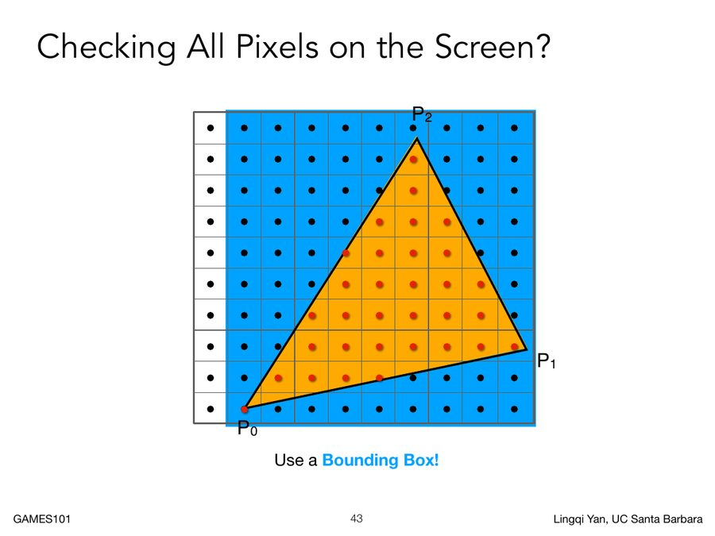
2.3 问题：锯齿
把采样得到的信号送到显示器，显示器发出的是一堆方块，和连续的三角形比，边缘全是 jaggies（锯齿）。这是 aliasing 的一种。能做得更好吗？
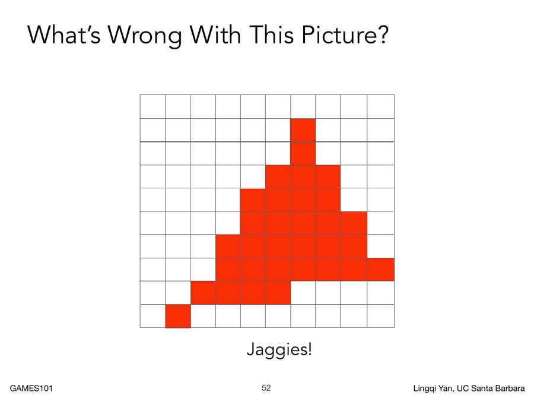
3. 采样理论与反走样
3.1 采样伪影
采样在图形学里无处不在：光栅化是采样 2D 位置，照片是采样传感器平面，视频是采样 时间。采样带来的错误统称 aliasing：
- Jaggies：空间采样不足
- Moiré 纹：图像欠采样（比如隔行隔列丢弃）
- Wagon wheel effect：时间采样不足导致车轮看起来倒转
背后的原因都是：信号变化太快（高频），而采样太慢。
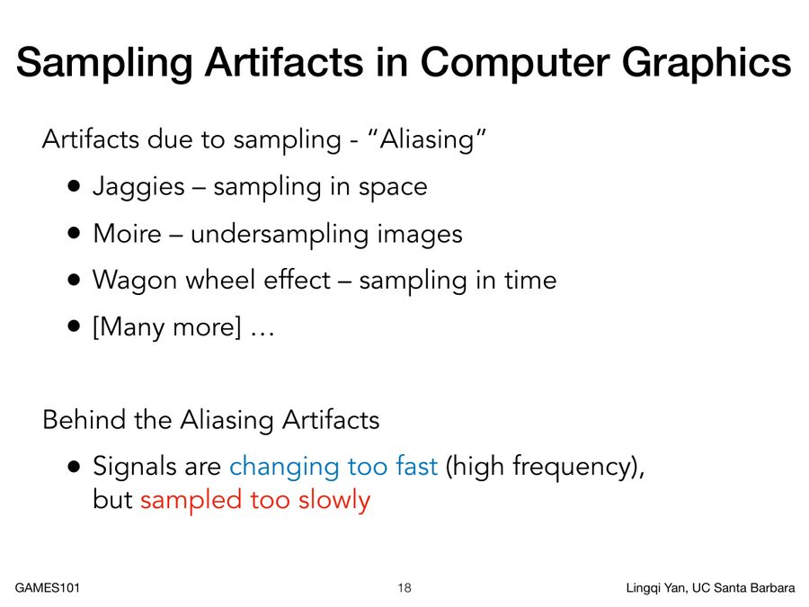
3.2 反走样的思路：先模糊（pre-filter）再采样
对三角形先做一次模糊（去掉高于 Nyquist 频率的成分）再在像素中心采样，边缘像素就会 取中间值，锯齿消失。注意顺序不能反：先采样再模糊是 blurred aliasing，是错的。
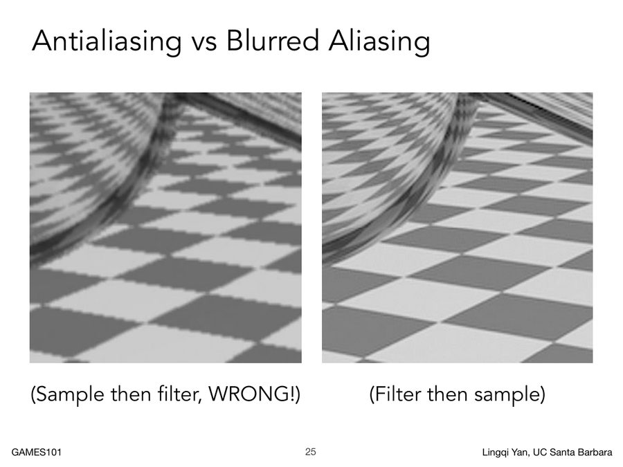
为什么欠采样会走样？为什么先滤波再采样能反走样？要从频域理解。
3.3 频域
Fourier transform 把一个函数表示成不同频率的正弦、余弦的加权和：
高频需要更快的采样。用同样的采样间隔去采不同频率的信号：低频信号能被正确恢复， 高频信号采样不足，恢复出来的却像一个低频信号。在给定采样率下无法区分的两个频率 互为 alias，这就是走样的本义。
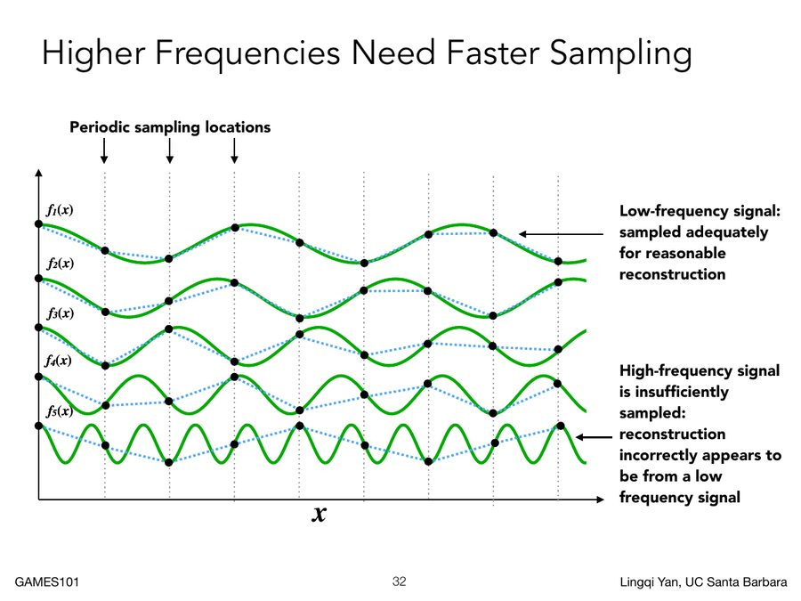
Filtering = 去掉某些频率成分。对图像做 Fourier 变换，中心是低频、四周是高频， 自然图像大部分能量在低频。高通滤波留下边缘，低通滤波得到模糊的图。
Filtering = Convolution = Averaging。卷积就是用一个滑动窗口做局部加权平均。 卷积定理：空域的卷积等于频域的乘积，反之亦然。所以滤波有两种做法：直接在空域 卷积，或者变换到频域、乘以卷积核的频谱、再变换回来。
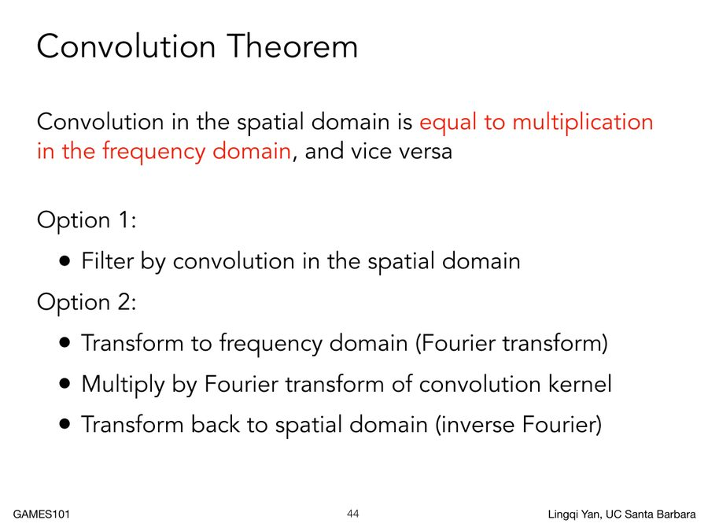
Box filter 是低通滤波器（它的频谱是 sinc），卷积核越宽，通过的频率越低。
3.4 采样 = 重复频谱
在空域采样等于乘以一个冲激串，冲激串的频谱还是冲激串，所以按卷积定理，空域采样 等于在频域把原信号的频谱周期性重复。采样越稀疏，频域的复制间隔越小；当复制品 互相重叠、混在一起时，就是 aliasing。
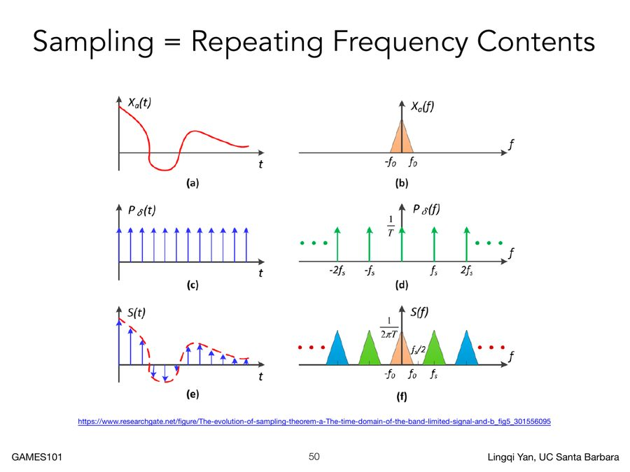
3.5 怎么减少走样
- Option 1：提高采样率。相当于拉大频域复制品的间距。需要更高分辨率的显示器、 传感器、framebuffer，代价大
- Option 2：反走样。先把频谱变窄（滤掉高频）再采样，复制品就不会重叠
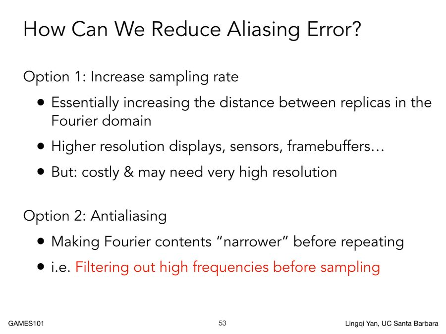
实用的 pre-filter：一个像素宽的 box filter。做法是先用 1 像素的 box blur 对 \(f(x, y)\) 卷积，再在每个像素中心采样。对光栅化一个三角形来说，一个像素内 \(inside(tri, x, y)\) 的平均值就是该像素被三角形覆盖的面积比例。
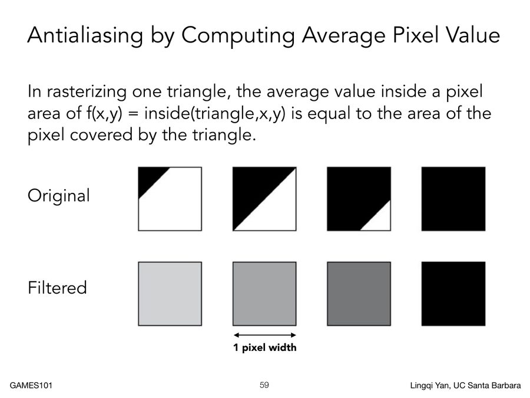
3.6 MSAA：用 supersampling 近似
精确算覆盖面积不容易，supersampling 用一个像素内多个采样点的平均来近似 1 像素 box filter 的效果：
- 每个像素取 \(N \times N\) 个采样点
- 把每个像素内的采样点平均（averaging down）
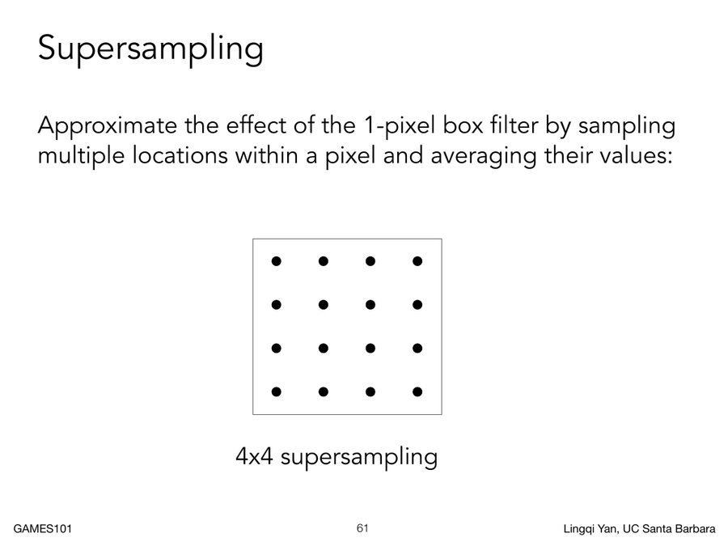
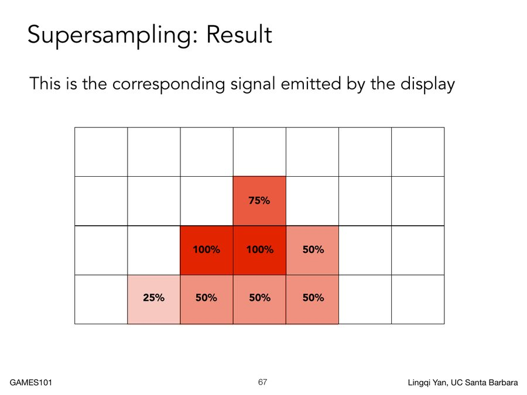
No free lunch：MSAA 的代价是采样点数倍增，计算量也倍增（实际 GPU 会做一些 复用）。反走样的里程碑：FXAA（Fast Approximate AA，图像后处理找边缘）、 TAA（Temporal AA，复用上一帧的采样）。相关的是 super resolution， 比如 DLSS，本质上还是"采样不够"的问题。
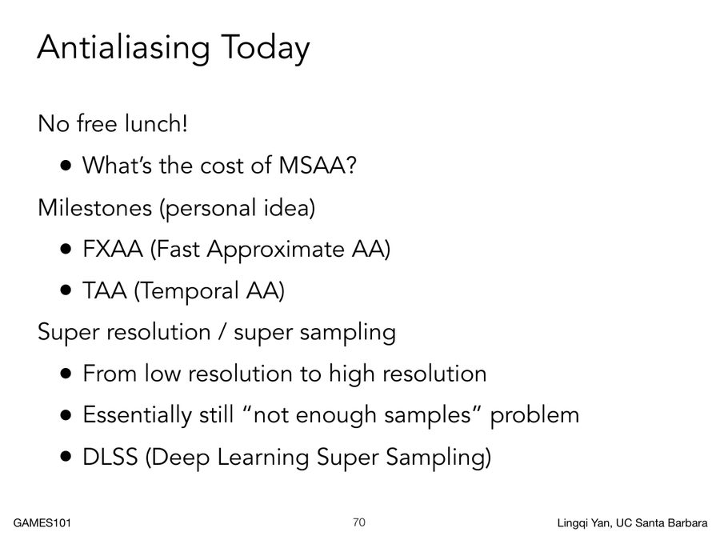
4. 可见性：Z-buffer
多个三角形互相遮挡时，谁在前面？
Painter's algorithm：像画家一样从远到近画，近的覆盖远的。需要按深度排序 （\(O(n \log n)\)），而且存在无法排序的情况（三个三角形循环遮挡）。
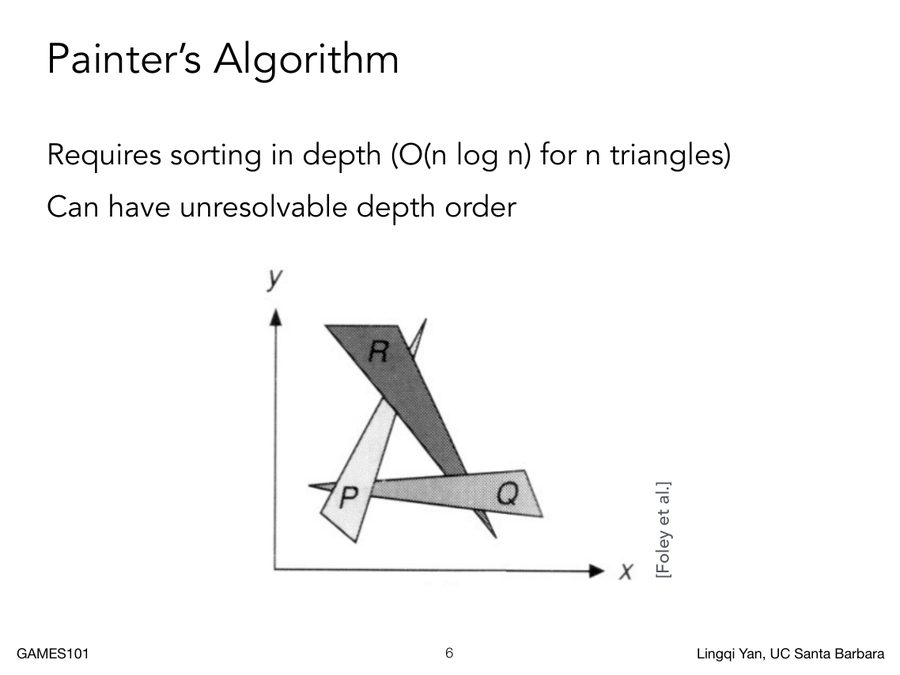
Z-buffer 是最终胜出的算法。思想：给每个采样点（像素）存当前最小的 z，所以除了 存颜色的 frame buffer，还要一个存深度的 depth buffer（z-buffer）。为简单起见， 假设 z 总是正数，越小越近。
Initialize depth buffer to ∞
for (each triangle T)
for (each sample (x, y, z) in T)
if (z < zbuffer[x, y]) // closest sample so far
framebuffer[x, y] = rgb; // update color
zbuffer[x, y] = z; // update depth
else
; // do nothing, occluded
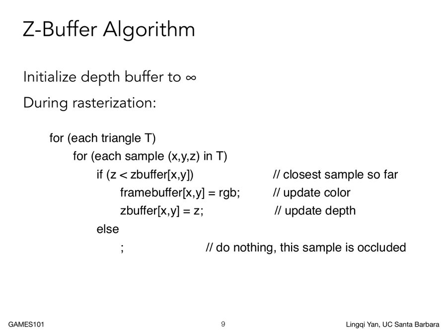
复杂度 \(O(n)\)（假设覆盖面积是常数）。为什么能线性时间"排序"？因为根本不排序， 只是逐点比较最小值，所以画三角形的顺序无关（深度相等时除外）。这是最重要的 可见性算法，所有 GPU 都用硬件实现。MSAA 时 z-buffer 也要按采样点存。
5. Shading：Blinn-Phong 模型
5.1 什么是 shading
字典里 shading 是给插图涂暗或上色；本课定义为给物体应用材质的过程。
观察真实照片可以看到三种成分：specular highlights（高光）、diffuse reflection（漫反射）、ambient lighting（环境光）。
Shading is local：只在一个 shading point 上计算反射向相机的光，输入是 观察方向 \(\hat{v}\)、表面法线 \(\hat{n}\)、光照方向 \(\hat{l}\)（每个光源一个）、 表面参数（颜色、shininess 等），都是单位向量。因为是局部的，不会产生阴影 （shading ≠ shadow）。
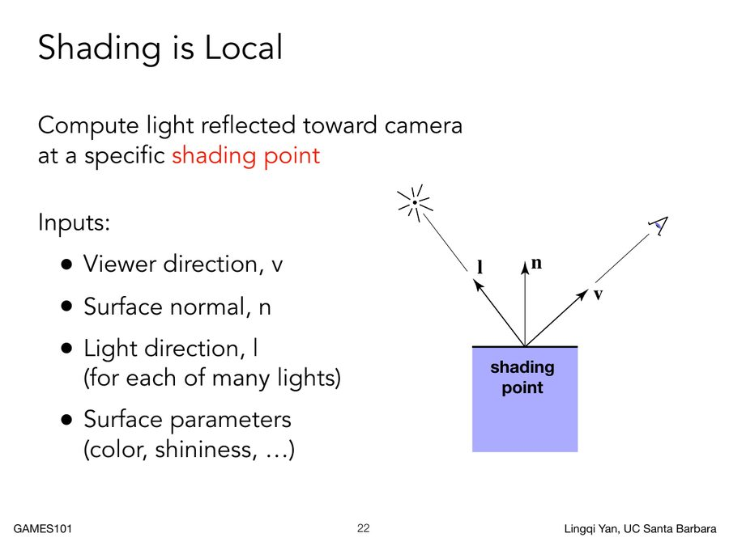
5.2 漫反射（Lambertian）
光被均匀地散射到所有方向，所以表面颜色与观察方向无关。但接收到多少光？ Lambert's cosine law：单位面积接收的光正比于 \(\cos\theta = \hat{l} \cdot \hat{n}\)。 把一个面转 60°，它截获的光就只剩一半。
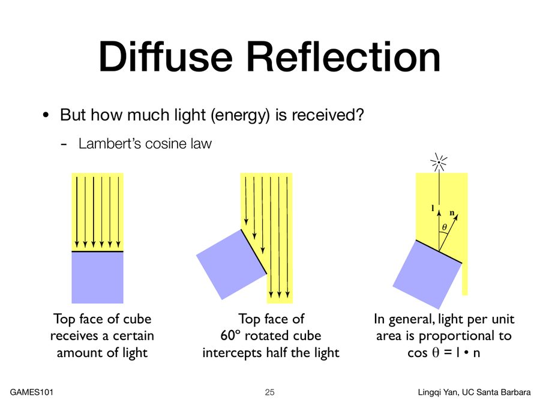
光的衰减：点光源在距离 \(r\) 处的强度是 \(I / r^2\)（能量守恒，球面面积正比于 \(r^2\)）。
\(k_d\) 是漫反射系数（颜色），\(I / r^2\) 是到达 shading point 的能量，\(\max(0, \cdot)\) 是因为光从背面来时不贡献。
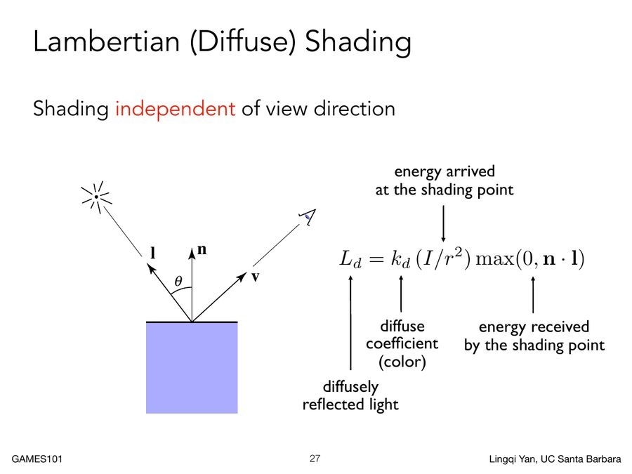
5.3 高光（Blinn-Phong specular）
亮度依赖于观察方向：观察方向接近镜面反射方向时很亮。Blinn-Phong 的做法是不算 反射方向，而是看半程向量 \(\hat{h}\)（\(\hat{v}\) 和 \(\hat{l}\) 的角平分线）是否接近法线：
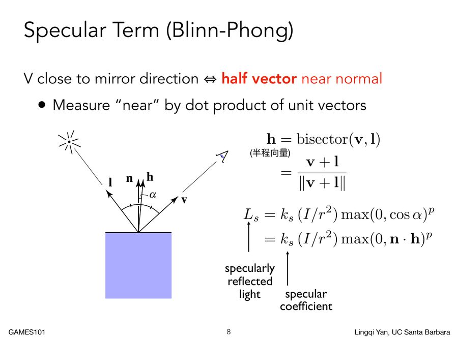
为什么要 \(p\) 次方？因为 \(\cos\alpha\) 本身衰减太慢，偏离 45° 还有 0.7，高光会太大。 指数 \(p\) 越大，高光 lobe 越窄，通常用 100 到 200。\(k_s\) 一般是白色。
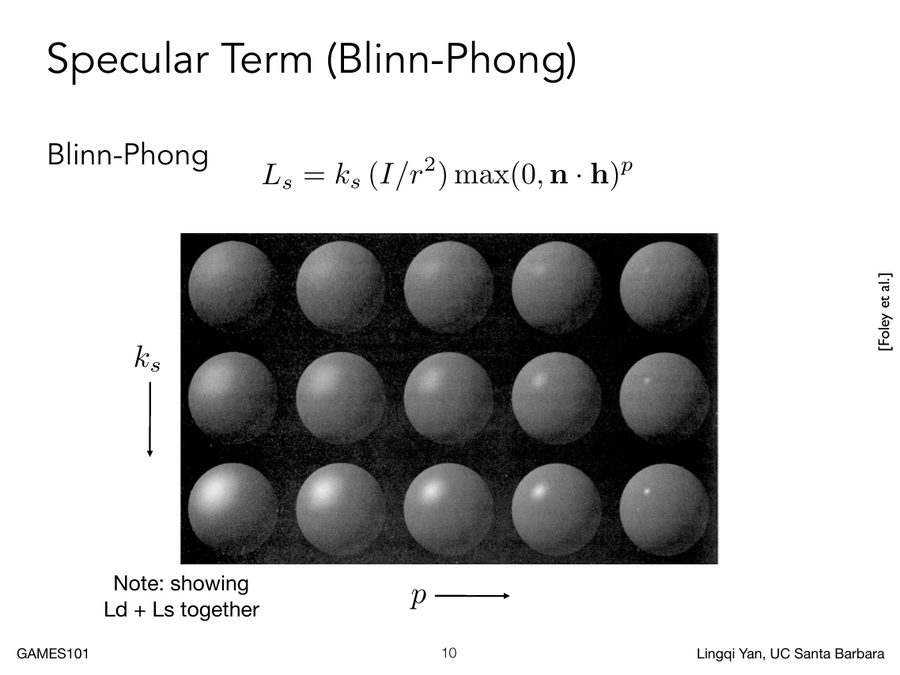
（原始 Phong 模型用 \(\hat{R} \cdot \hat{v}\)，Blinn-Phong 用半程向量，更便宜也更接近实际。）
5.4 环境光与完整模型
Ambient term 不依赖任何东西，加一个常数颜色来补偿被忽略的间接光照、填掉全黑 的阴影，是近似的、假的：\(L_a = k_a I_a\)。
Blinn-Phong reflection model = ambient + diffuse + specular：
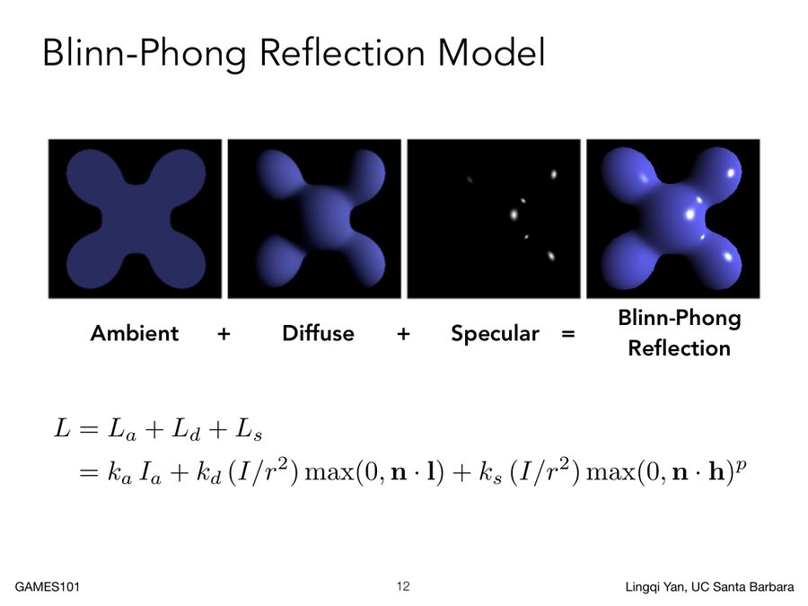
6. Shading frequencies 与图形管线
6.1 Flat / Gouraud / Phong shading
同一个模型三种画法差别很大，区别在于在哪个粒度上做 shading：
- Flat shading：每个三角形一个法线，整面一个颜色。对光滑表面不好
- Gouraud shading：每个顶点算一次颜色，三角形内部插值颜色
- Phong shading：在三角形内部插值法线，每个像素算完整的 shading 模型 （注意这是 Phong shading，不是 Blinn-Phong reflectance model）
三角形足够密的时候，flat shading 也能很好；shading frequency 的选择要看几何复杂度。
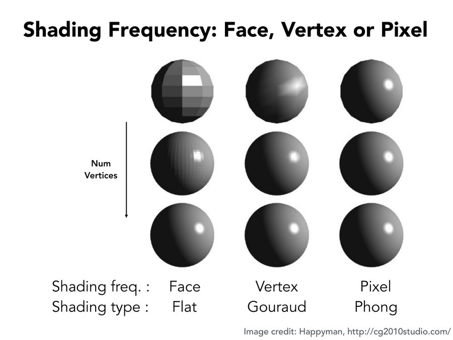
顶点法线怎么来？最好从底层几何得到（比如球面）。否则用周围面法线的平均 （可以按面积加权）。像素法线由顶点法线用重心坐标插值得到，别忘了归一化。
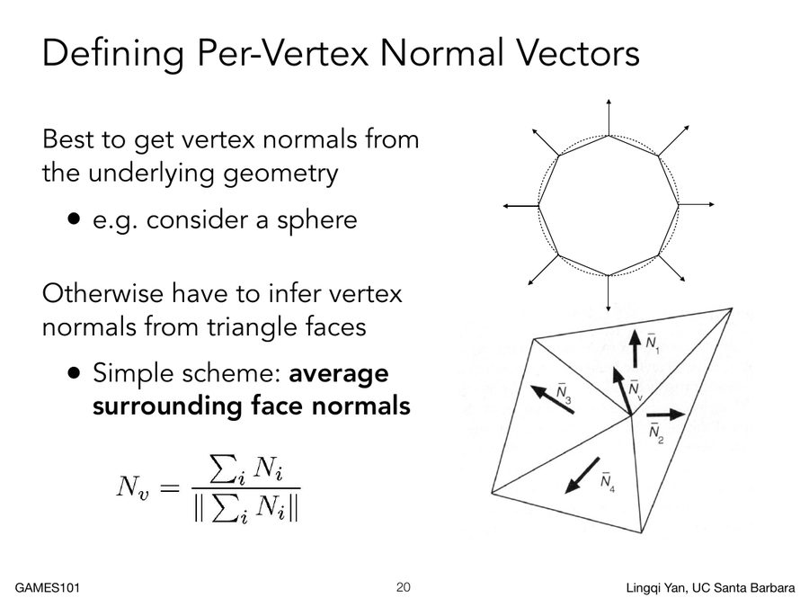
6.2 Graphics (real-time rendering) pipeline
- Application 输入 3D 空间的顶点
- Vertex processing：MVP 变换，顶点到屏幕空间（vertex stream）
- Triangle processing：组成屏幕空间的三角形（triangle stream）
- Rasterization：采样三角形覆盖，产生 fragments（每个被覆盖的采样点一个）
- Fragment processing：z-buffer 可见性测试、shading、texture mapping （shaded fragments）
- Framebuffer operations：输出图像
Shading 可以发生在 vertex processing（Gouraud）或 fragment processing（Phong）。
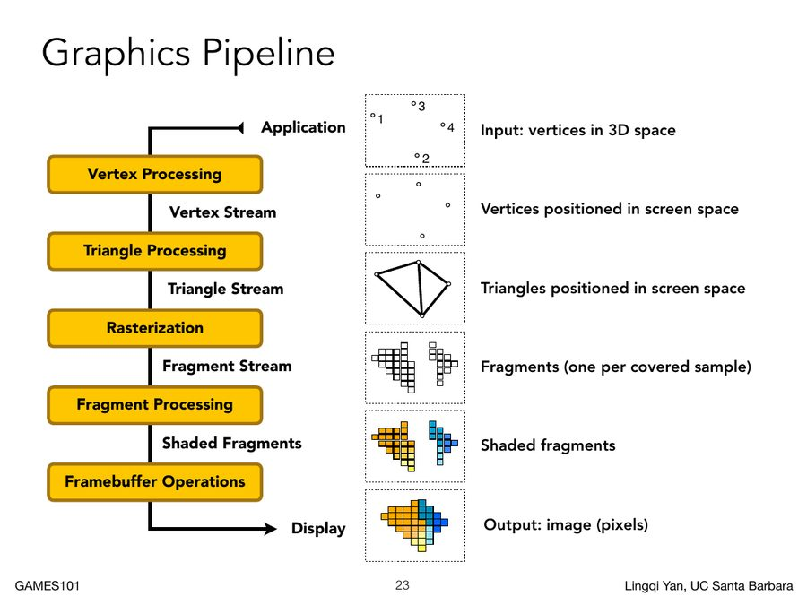
Shader programs：vertex 和 fragment 两个阶段是可编程的，程序描述对单个顶点 （或 fragment）的操作，硬件并行执行。例子（GLSL fragment shader）：
uniform sampler2D myTexture; // program parameter
uniform vec3 lightDir; // program parameter
varying vec2 uv; // per fragment value (interp. by rasterizer)
varying vec3 norm; // per fragment value (interp. by rasterizer)
void diffuseShader() {
vec3 kd;
kd = texture2d(myTexture, uv); // material color from texture
kd *= clamp(dot(-lightDir, norm), 0.0, 1.0); // Lambertian shading model
gl_FragColor = vec4(kd, 1.0); // output fragment color
}
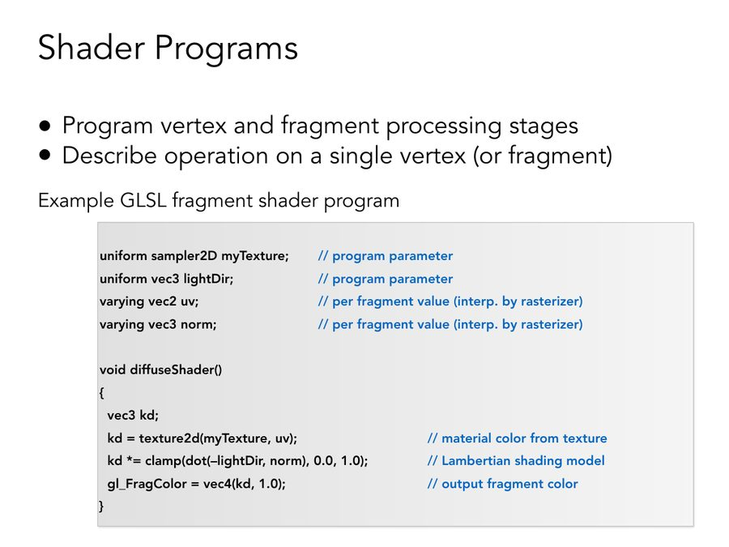
目标是实时渲染高度复杂的场景：几十万到上百万三角形、复杂的 shader、2 到 4 百万像素 加 supersampling、30 到 60 fps（VR 更高）。GPU 是专门执行图形管线的异构多核处理器， 既有可编程部分也有大量固定功能单元。
7. Texture mapping
7.1 纹理坐标
漫反射系数 \(k_d\) 在不同位置不同，怎么办？表面是 2D 的：3D 表面上的每个点在 2D 的 texture 图像上也有一个位置，坐标记作 \((u, v)\)（通常归一化到 \([0, 1]\)）。 每个三角形顶点被赋予一个纹理坐标，三角形"复制"纹理上的一块到表面。纹理可以 tile 重复使用（设计时要注意四方连续）。
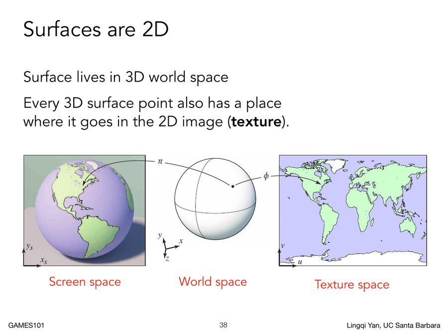
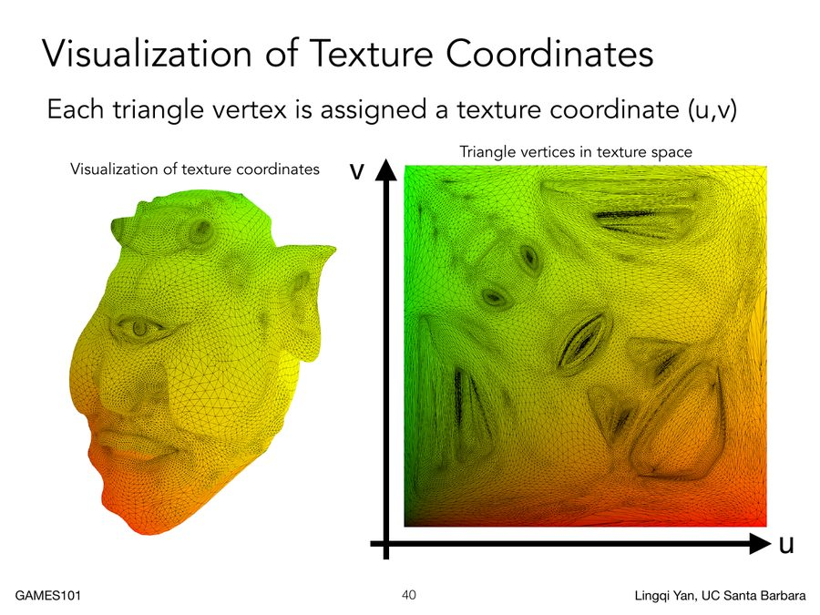
7.2 重心坐标（barycentric coordinates）
为什么要插值？因为我们只在顶点上指定值（纹理坐标、颜色、法线……），却希望在三角形 内部平滑变化。工具就是重心坐标：三角形 \(ABC\) 内任一点
三个坐标都非负时点在三角形内。\(A\) 的重心坐标是 \((1, 0, 0)\)，重心是 \((1/3, 1/3, 1/3)\)。 几何意义是面积比：\(\alpha = A_A / (A_A + A_B + A_C)\)，\(A_A\) 是点与 \(B, C\) 围成的 （对着 \(A\) 的）三角形面积。
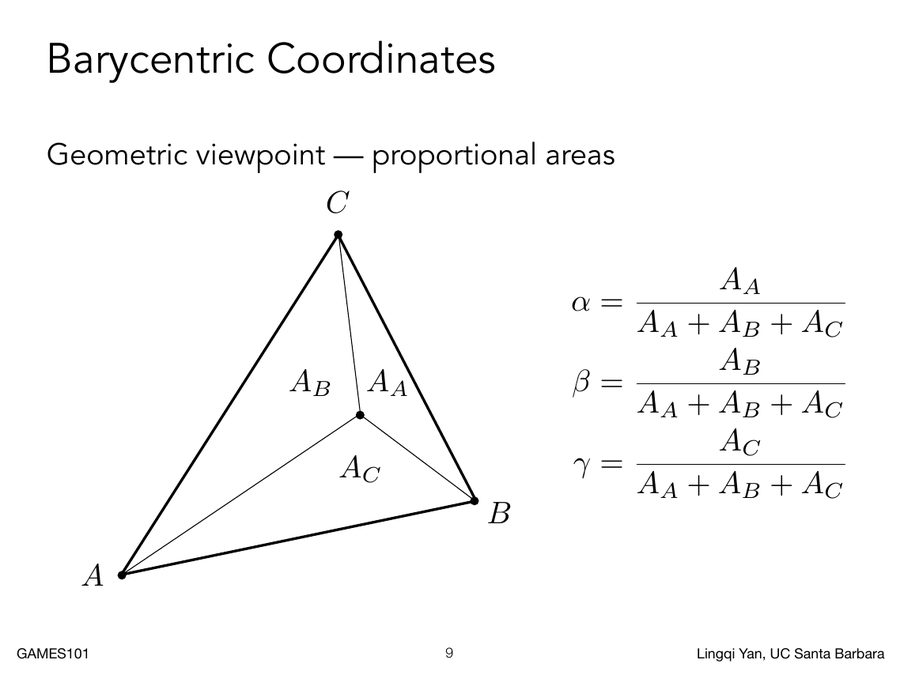
公式：
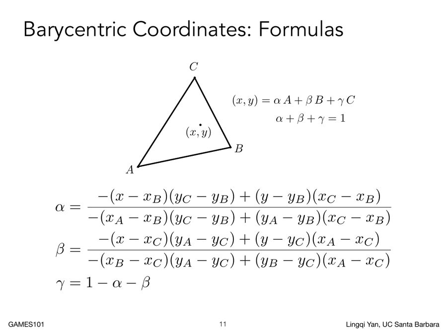
用它线性插值顶点属性：\(V = \alpha V_A + \beta V_B + \gamma V_C\)，\(V\) 可以是位置、 纹理坐标、颜色、法线、深度、材质属性。注意：重心坐标在投影下不保持，所以 插值 3D 属性时应该在 3D 空间（投影前）算重心坐标，而不是用屏幕空间的。
7.3 简单纹理映射
for each rasterized screen sample (x, y): // usually a pixel's center
(u, v) = evaluate texture coordinate at (x, y) // using barycentric coordinates
texcolor = texture.sample(u, v);
set sample's color to texcolor; // usually the diffuse albedo kd
7.4 纹理太小：magnification
纹理分辨率不够时，多个像素映射到同一个纹理像素（texel），直接取最近的 texel 会出现马赛克。解法是插值：nearest、bilinear、bicubic。
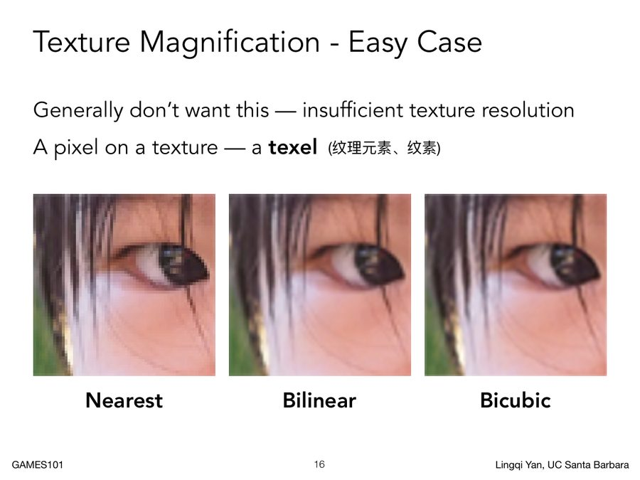
Bilinear interpolation：取查询点周围最近的 4 个 texel \(u_{00}, u_{10}, u_{01}, u_{11}\) 和小数偏移 \((s, t)\)，
先水平做两次 lerp，再垂直做一次。代价合理，效果通常不错。Bicubic 取 16 个 texel 用三次插值，更好但更贵。
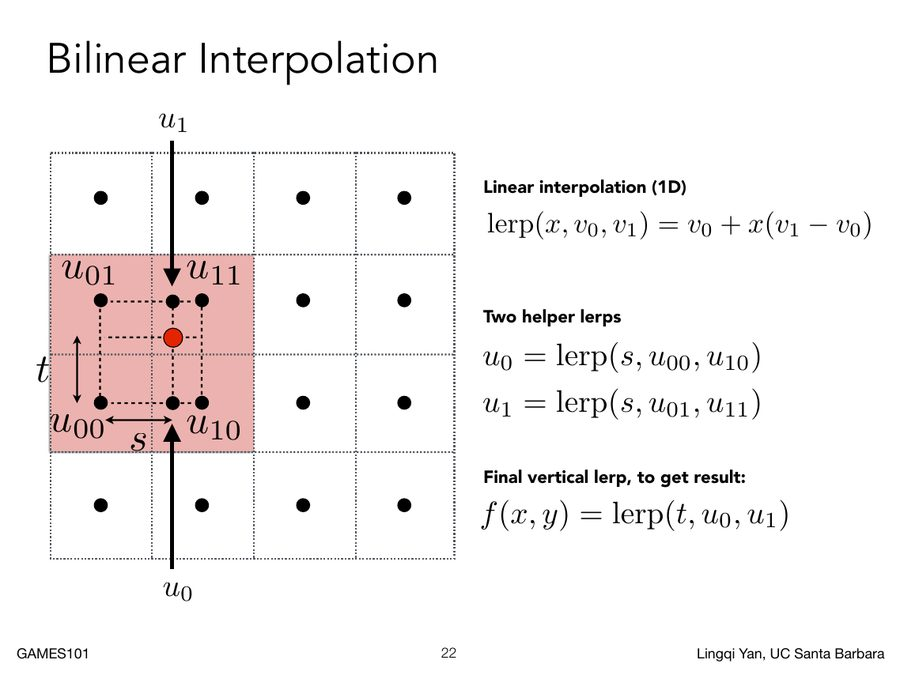
7.5 纹理太大：minification
纹理太大时反而更麻烦：远处一个像素覆盖很多 texel，点采样会出现 moiré 和锯齿。 本质上是一个屏幕像素在纹理空间的 footprint 大小差异很大：近处是放大 （magnification），远处是缩小（minification）。
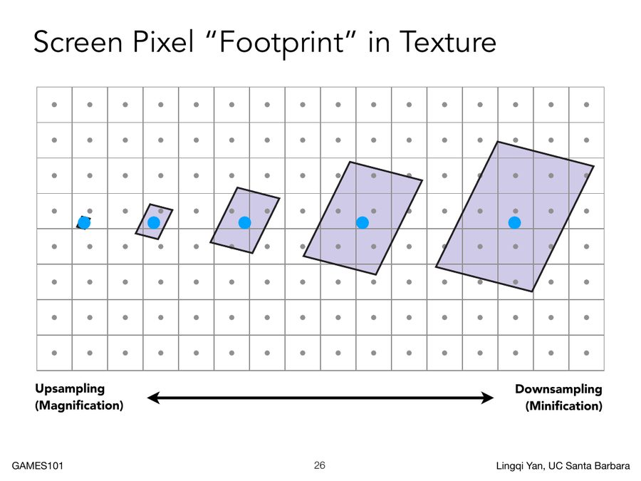
Supersampling 能解决（512× 就很好），但太贵。换个角度：不采样，而是直接求一个 范围内的平均值，即把 point query 变成 (average) range query。
Mipmap（L. Williams 1983，mip 来自拉丁语 multum in parvo）：允许快速、近似、 方形的范围查询。预先把纹理逐级减半，level 0 是原图 128×128，level 1 是 64×64， 一直到 1×1。存储开销只多 \(1/3\)（\(1 + 1/4 + 1/16 + \dots = 4/3\)）。
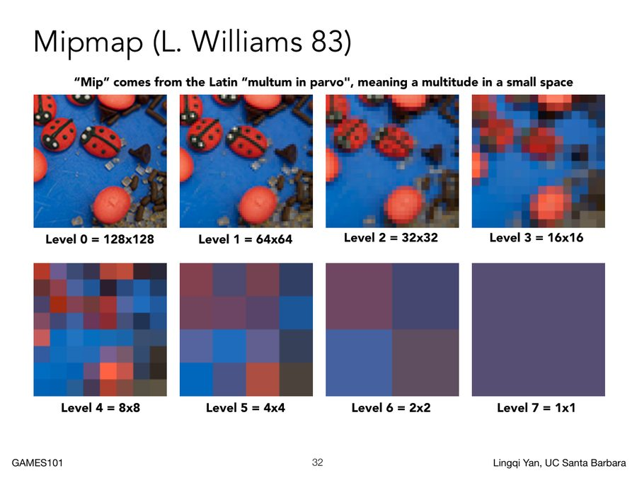
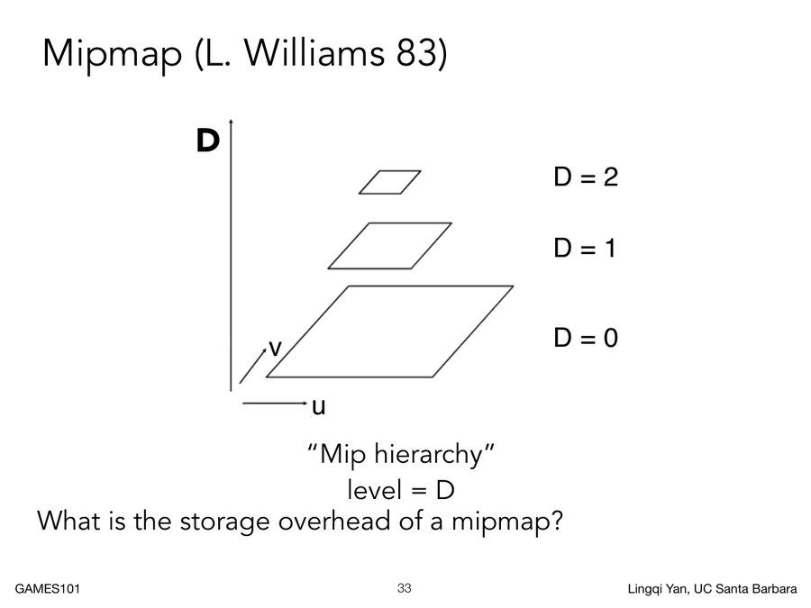
计算 mipmap 层级 D：用相邻屏幕采样点的纹理坐标估计 footprint 大小
含义是：footprint 边长 \(L\) 个 texel 的区域，在第 \(D\) 层正好对应一个 texel。
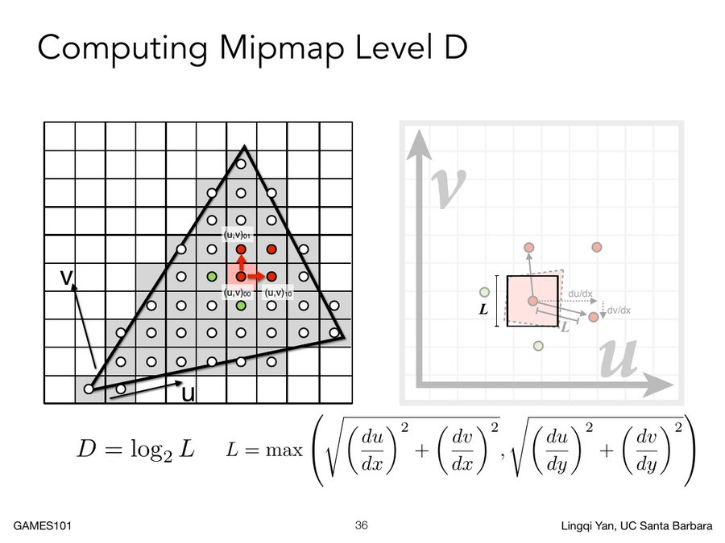
\(D\) 一般不是整数。四舍五入会有层级跳变，更好的是 trilinear interpolation： 在第 \(D\) 层和第 \(D + 1\) 层各做一次 bilinear，再按 \(D\) 的小数部分 lerp 一次。
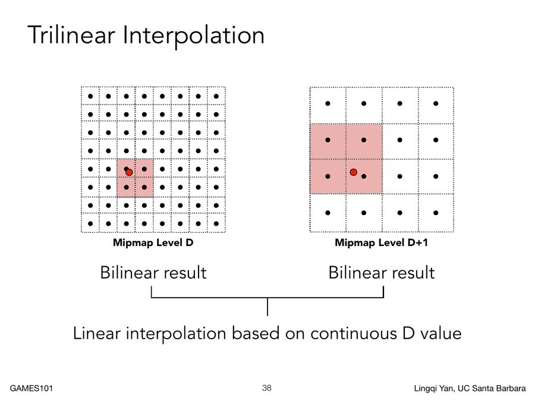
Mipmap 的局限：远处会overblur，因为它只能查方形区域，而斜着看时 footprint 是拉长的。
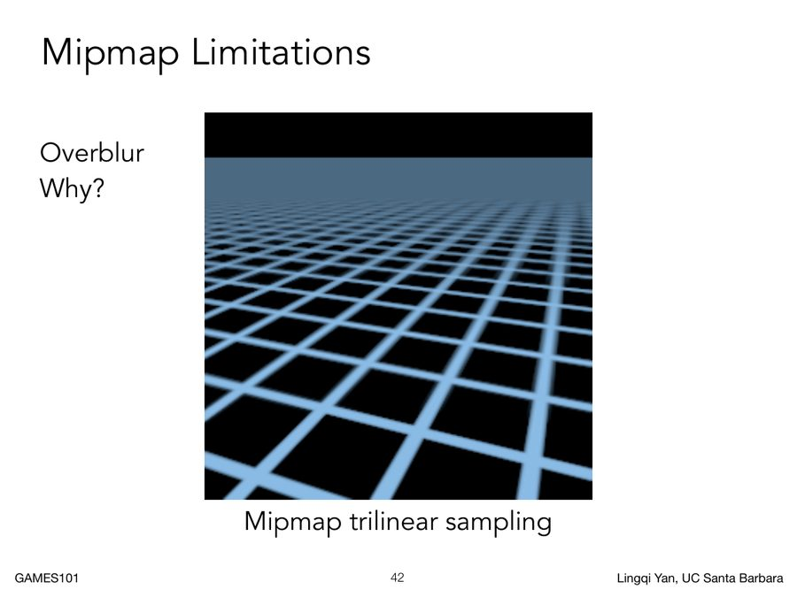
Anisotropic filtering：Ripmap 在水平和垂直方向分别做不同比例的压缩，可以查 轴对齐的矩形区域（存储开销 3 倍），对角线方向的 footprint 仍是问题。EWA filtering 用多次查询的加权平均处理不规则（椭圆）footprint，仍然借助 mipmap 层级。 游戏里的 "16× 各向异性过滤"指压缩比例，和分辨率无关，主要吃显存带宽。
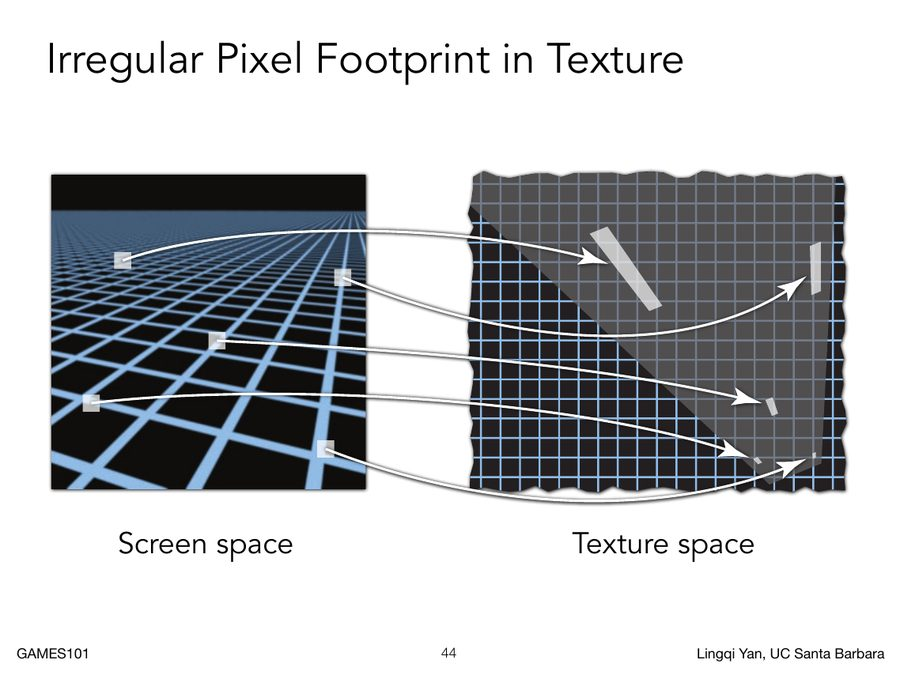
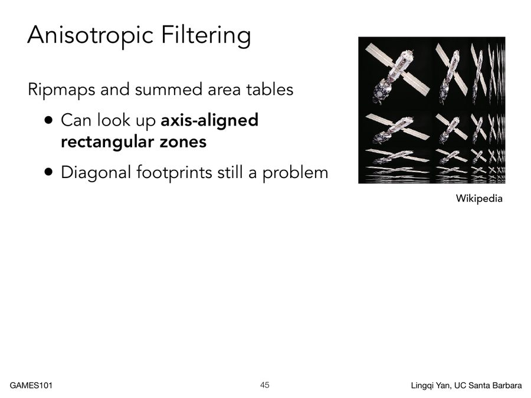
8. 纹理的其他应用
在现代 GPU 里，texture = memory + range query (filtering)，是把数据带进 fragment 计算的通用方法，用途远不止贴颜色。
8.1 Environment map
把环境光记录在一张纹理上（Blinn & Newell 1976），假设光来自无穷远（只有方向没有 位置），渲染时按方向查询。Spherical map 把方向记在球面上再展开，两极附近有严重 的拉伸畸变；cube map 把方向记在包围的立方体的 6 个面上，畸变小得多，但需要先算 方向落在哪个面上。
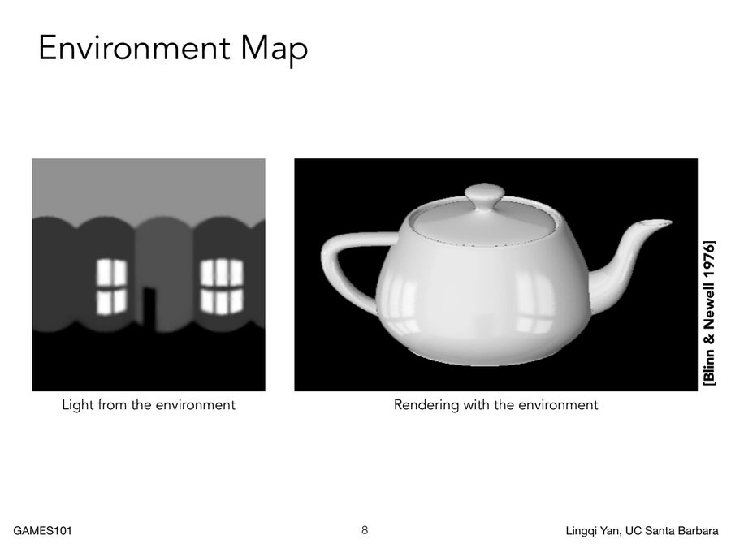
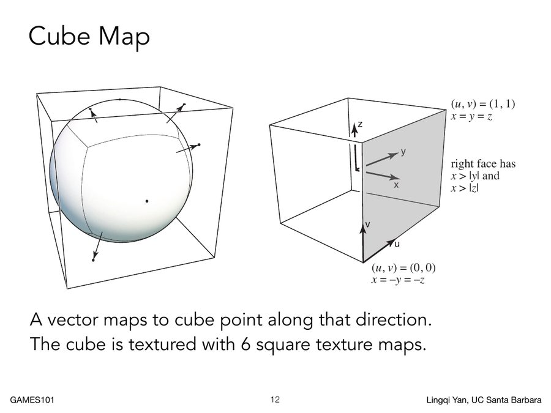
8.2 Bump mapping 与 displacement mapping
纹理不只能存颜色，还可以存高度或法线，来伪造细节几何。Bump mapping：不增加 三角形，只按纹理逐像素扰动法线（仅用于 shading）。
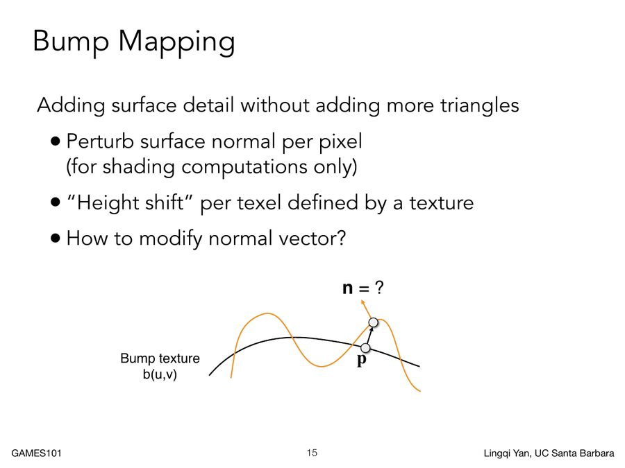
怎么扰动？先在 flatland 里看：原法线 \(n(p) = (0, 1)\)，高度导数 \(dp = c \cdot [h(p + 1) - h(p)]\)，扰动后的法线是 \((-dp, 1)\) 归一化。3D 情形：原法线 \((0, 0, 1)\)，
注意这是局部坐标系（法线是 z 轴）里的结果，还要变换回世界坐标。
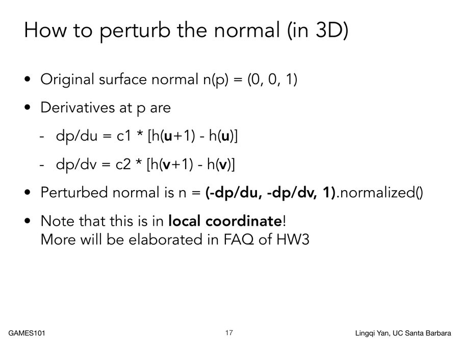
Displacement mapping 用同样的纹理，但真的移动顶点。效果更好（边缘轮廓和 阴影都对了），代价是要求模型足够细，或者用 GPU 的动态曲面细分。
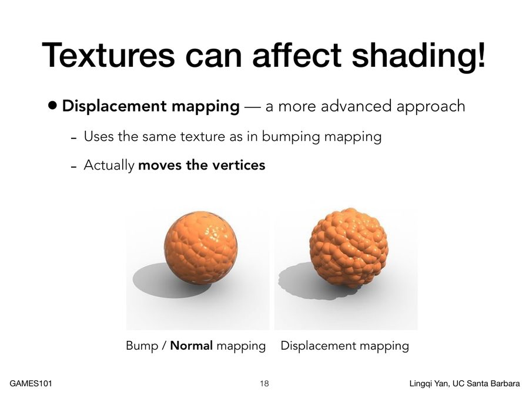
8.3 其他
- 3D procedural noise（Perlin noise）：三维纹理，用噪声函数定义，切开也有纹理
- 预计算 shading：比如 ambient occlusion 贴图
- 3D textures 与 volume rendering：医学数据等
9. Shadow mapping
光栅化怎么画阴影？Shadow mapping 是一个 image-space 算法：计算阴影时不需要场景 几何，但要处理走样。关键思想：不在阴影里的点，必须既被光看到，也被相机看到。
- Pass 1：从光源渲染一张深度图（shadow map）
- Pass 2A：从相机渲染带深度的标准图像
- Pass 2B：把相机看到的每个点投影回光源，比较它到光源的距离和 shadow map 里记录 的深度。相等则可见（不在阴影里），比记录的远则被挡住（在阴影里）
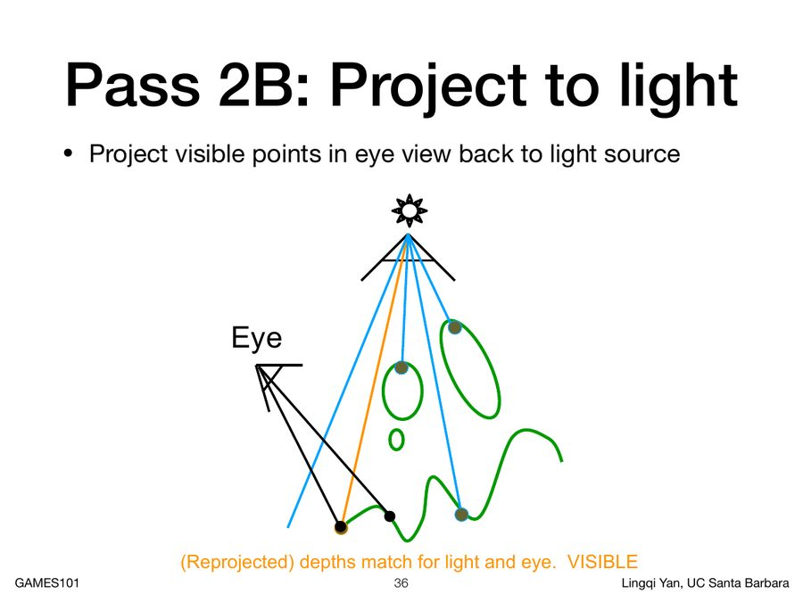
这是著名的经典技术，早期动画（Toy Story）和所有 3D 游戏都在用。问题：
- 只能做硬阴影（点光源）。软阴影来自有面积的光源，有本影（umbra）和半影 （penumbra）
- 质量取决于 shadow map 分辨率（image-based 技术的通病）
- 比较浮点深度的相等性，涉及 scale、bias、tolerance 等麻烦
Comments